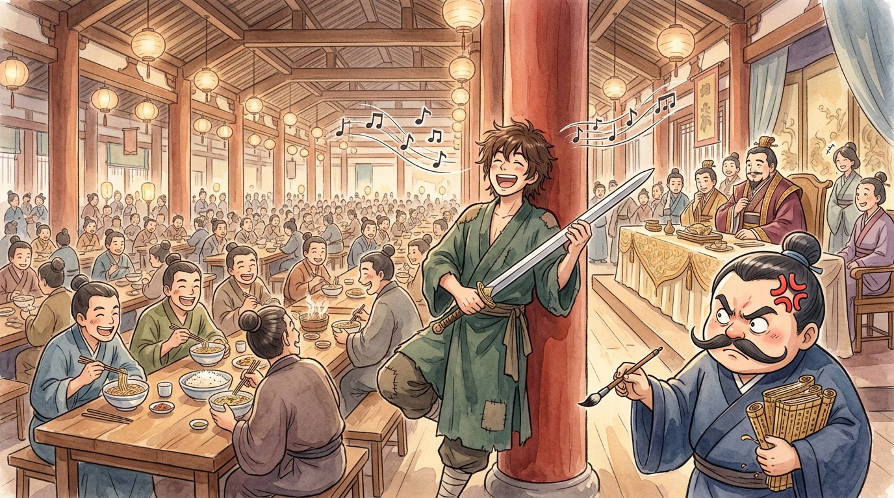
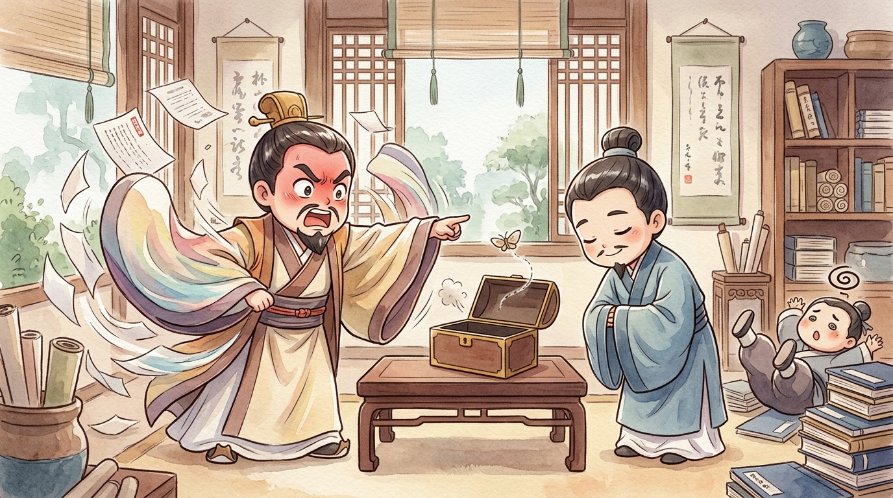
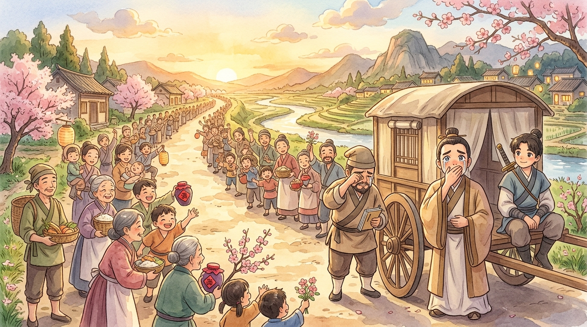

HOUSEHOLD EXPENSE REPORT — estate of Lord Mengchang (孟嘗君) of Qi (齊). Prepared by the Chief Steward, keeper of accounts, counter of every last copper coin. Filed with a complaint: my lord collects "guests" the way other nobles collect horses — THREE THOUSAND of them eat at our tables, because my lord believes that somewhere in the crowd hides a genius who will one day save his life.1 Three thousand breakfasts a day on the theory of "one day." I am an accountant. "One day" does not balance a ledger. And this report concerns the worst guest of them all.
🧾 Expense item #1: The singing freeloader
He arrived with no letter, no reputation, no skills — I asked him directly, "What are you good at?" and he said, cheerful as a sparrow, "Nothing at all!" My lord admitted him anyway. (See above: business model.) We assigned him the basic package: vegetables, plain rice, dormitory bed. Adequate! Generous, even!
Within a week, this Feng Xuan (馮諼) was leaning against a pillar, strumming his old SWORD like a lute and singing at the top of his lungs: "Long sword, long sword, let's go home! We get no FISH with dinner!" (長鋏歸來乎！食無魚！) The other guests howled with laughter. My lord — instead of tossing him out — said, "Give him fish." I recorded the expense. Next month, the pillar again: "Long sword, let's go home! We get no CARRIAGE!" My lord: "Give him a carriage." I recorded the expense, pressing rather hard on the brush. A month later: "Long sword, let's go home! My old MOTHER has no support!" My lord sent food and silver to his mother. Fine. FINE. I recorded it. The singing stopped at last — and I wrote in the margin of my ledger: "This man tests how deep a lord's generosity runs. To what purpose, I dread to discover."2

🧾 Expense item #2: The debt-collecting disaster
Now to the catastrophe. My lord's wealth comes partly from his private fief — the town of Xue (薛), whose people owe him mountains of loan-money. With three thousand mouths devouring the pantry, we badly needed those debts collected. And who volunteered to go? THE SINGER. My lord, curious, agreed, and even I thought: at last, the freeloader earns his fish. As he mounted the carriage (OUR carriage, see expense item #1), Feng Xuan called back: "When the debts are collected — shall I buy something? What does this house lack?" And my lord answered lightly, fatefully: "Look around at what my house lacks... and buy me that."
What happened in Xue, I have from seventeen eyewitnesses, each account worse than the last. He gathered every debtor in the market square — poor farmers clutching their tallies, dreading the interest.3 He checked the records carefully (the man can count, I'll grant him that). Those few who could pay, paid. And then, for the many who could not — the failed harvests, the sick oxen, the empty-handed — Feng Xuan stood up in the cart and announced: "Lord Mengchang says: consider these debts his GIFT!" — and he heaped every last contract into a pile, and BURNED them.
Burned. The contracts. My contracts. The square went silent, then erupted — farmers weeping, cheering, crying "Ten thousand years to Lord Mengchang!" while my beautiful ledgers went up in smoke.

Back home, my lord's face was thunder. "You BURNED the debts?! What did you BUY?!" And Feng Xuan bowed, calm as ever: "My lord told me to buy what the house lacks. I looked: you have treasure, horses, beauties — piles of everything. Only one thing was missing: righteousness — the loyalty of grateful hearts. So I bought you YI (義) (竊以為君市義). You cannot see it today. But it keeps better than gold." My lord ground his teeth and waved him away. In the ledger, under "purchases," I wrote the strangest entry of my career: "One (1) YI. Price: everything. Value: unknown."
🧾 Audit result: one year later
The value became known. Politics, that weather no roof keeps out: a new king rose in Qi, heard whispers that Lord Mengchang had grown too famous, too beloved, too POWERFUL — and dismissed him from the prime ministership. Overnight, our shining household collapsed. And the three thousand guests, those connoisseurs of my lord's kitchen? They evaporated like morning mist on a hot griddle. I counted the leavers, since counting is my consolation. Two thousand nine hundred and... nearly all. Who remained? The singer. With the carriage HE had scrounged, driving my lord toward the only place left: little Xue.
I confess what I expected: peasants hiding indoors from the fallen lord who once held their debts. What we found, a full hundred li from the town: the ROAD LINED WITH PEOPLE — old men, mothers with babies, children waving — carrying food and wine to welcome their lord home, the lord who burned the debts in the bad year. My lord stared at them a long, long time. Then he turned to Feng Xuan and said, quietly: "Sir... today I finally see what you bought me." (先生所為文市義者，乃今日見之)

🧾 Appendix: the three burrows
And the singer wasn't finished. "A clever rabbit keeps three burrows (狡兔三窟)," he told my lord. "Xue is only the first — you can sleep, but not yet soundly." Burrow two: Feng Xuan travelled west and persuaded the rival state of Wei (魏) to offer my lord a magnificent post — three times, ever grander, and each time (following Feng Xuan's script) my lord regretfully declined. The king of Qi heard that OTHER kingdoms were courting the man he'd discarded, panicked, and restored my lord as prime minister with apologies and gifts. Burrow three: my lord requested the royal ancestral temple be built at Xue — for no king dares neglect (or attack!) the town where his ancestors' temple stands. Three burrows dug. My lord served as prime minister for decades and, the records say, not one whisker of trouble touched him.4
🧾 Steward's closing statement
I have re-audited the case of Feng Xuan, and I hereby correct my books. The fish, the carriage, the mother's stipend — those weren't a freeloader's tricks. The man was testing whether my lord's generosity was real before investing his genius in him. We were auditing each other, and he finished first. And the burned contracts were not a loss. They were the shrewdest purchase in the household's history — money exchanged for loyalty, at the one moment loyalty was cheap to buy and gold was useless.5
FINAL ENTRY, for all future accountants: gold buys things. Kindness buys people's hearts — and hearts, unlike gold, come running to meet you on the road when everything else is gone. Invest early. Signed, the Steward, who now lets the man sing at dinner as loudly as he pleases. 🧾